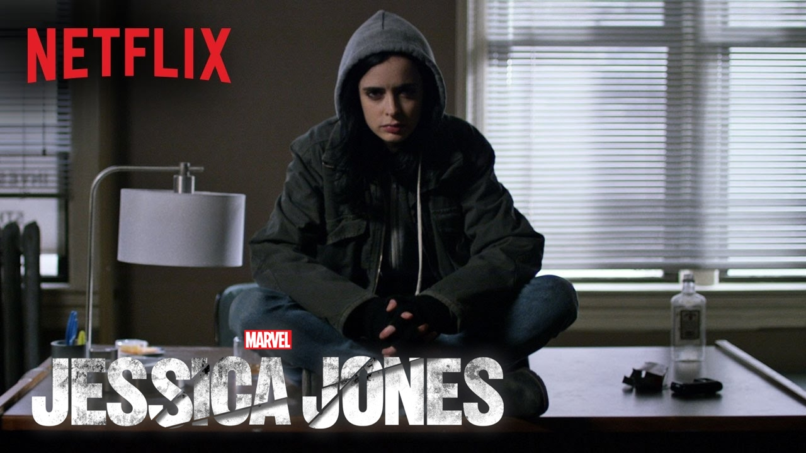

Marvel Cinematic Universe
Marvel Series
LUKE CAGE
Karl Lucas is a mercenary in prison. Against his will, he becomes a participant in a series of experiments conducted by scientists on prisoners who are serving long terms. A sudden side effect - the appearance of incredible physical strength and complete invulnerability - allows Karl to escape. He takes the name Luke Cage and settles in Harlem, trying not to draw attention to himself. The man gets a job as a dishwasher and plans to quit with the crime, but the past still finds him.
Agents of SHIELD
 The world already knows about the existence of superheroes, but is not yet sure whether they should be admired or feared. For Agent Phil Coulson and his team, this is a pressing issue. Their task is to keep the fragile world in balance, because those who receive such a gift from fate as superpowers do not always choose the righteous path and decide to help their neighbors: many of these people seek to get hold of "easy" money, and some even plan to take over the world. domination. For agents of the secret organization "SHIELD." to face not only those who are different from all of us, but also with mysterious artifacts and government intrigues. It is noteworthy that after the release of the first season, the series received rather modest reviews from viewers and critics, but now every season it gains more and more new loyal fans.
The world already knows about the existence of superheroes, but is not yet sure whether they should be admired or feared. For Agent Phil Coulson and his team, this is a pressing issue. Their task is to keep the fragile world in balance, because those who receive such a gift from fate as superpowers do not always choose the righteous path and decide to help their neighbors: many of these people seek to get hold of "easy" money, and some even plan to take over the world. domination. For agents of the secret organization "SHIELD." to face not only those who are different from all of us, but also with mysterious artifacts and government intrigues. It is noteworthy that after the release of the first season, the series received rather modest reviews from viewers and critics, but now every season it gains more and more new loyal fans.
JESSICA JONES
 Once upon a time, Jessica Jones used her incredible physical strength to help people. But one day she met a man who broke her will and made her become the performer of his evil intentions. Kilgrave, a psychopathic villain, also became the person she fell in love with. The tragic incident helped Jessica to free herself from his power, but starting a new life with such a burden was not so easy. Years later, she learns that Kilgrave has returned to the city and again threatens its inhabitants.
AGENT CARTER
The Second World War has just died down. As well as for millions of widowed women, she became a personal tragedy for Peggy Carter, who managed to fall in love with Captain America himself and remained forever devastated from the loss of her beloved (recall that Steve Rogers sacrificed himself by sending a plane with a dangerous artifact into the Arctic ice). After the onset of peace, Peggy gets a job in a secret organization, joining a snobbish group of men who see her as a useless and superficial beauty secretary. But Peggy has a secret opportunity to prove herself when a slanderous conspiracy is struck around the brilliant billionaire Howard Stark. Now she has to drop the charge of treason against him. Despite positive criticism, due to low ratings, the series was canceled after the second season.
Box office fees

| Movie title | Worldwide box office receipts |
|---|---|
| Avengers: Endgame | $2,797,800,564 |
| Avengers: Infinity War | $2,048,359,754 |
| Marvel's The Avengers | $1,518,815,515 |
| Avengers: Age of Ultron | $1,402,805,868 |
| Black Panther | $1,347,280,161 |
| Iron Man 3 | $1,214,811,252 |